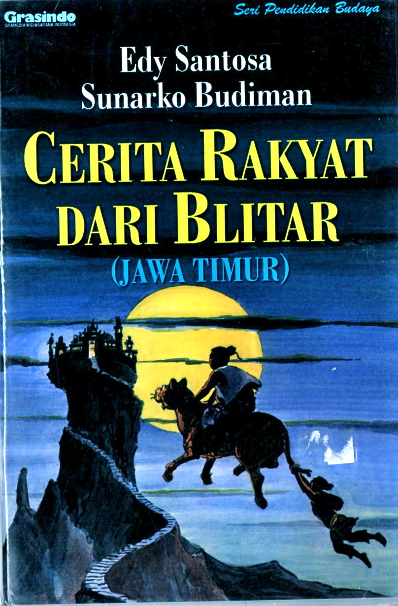

Pada zaman dahulu di wilayah Jawa Timur terdapat sebuah daerah yang masih berupa hutan lebat. Daerah tersebut sering dilanda berbagai bencana sehingga penduduk merasa takut untuk tinggal di tempat itu.
Pada masa itu hiduplah seorang tokoh pemberani bernama Aryo Blitar. Ia dikenal sebagai pemimpin yang bijaksana dan memiliki keberanian yang besar.
Melihat keadaan wilayah tersebut yang sering mengalami kesulitan, Aryo Blitar berusaha menenangkan masyarakat. Ia membantu membuka hutan, membangun pemukiman, serta melindungi penduduk dari berbagai gangguan.
Dengan kerja keras dan kepemimpinannya, daerah tersebut perlahan menjadi tempat yang lebih aman dan nyaman untuk dihuni. Masyarakat pun hidup lebih tenang dan mulai membangun kehidupan baru.
Sebagai bentuk penghormatan kepada tokoh yang berjasa tersebut, masyarakat kemudian menamai daerah itu dengan nama Blitar, yang diambil dari nama Aryo Blitar.
Sejak saat itu wilayah tersebut berkembang menjadi salah satu daerah penting di Jawa Timur yang kita kenal hingga sekarang sebagai Kota Blitar.